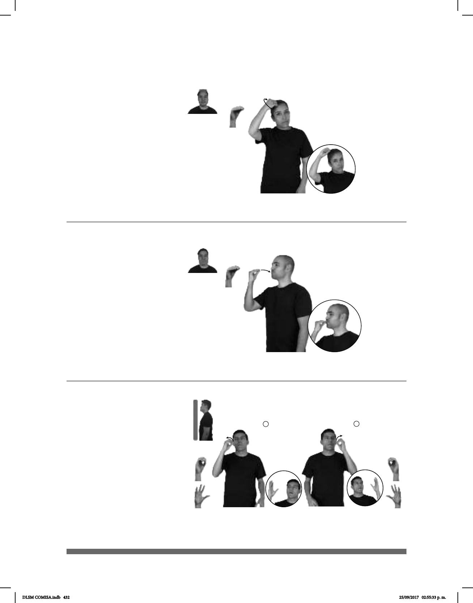

432
Seña: SM
O.5
La palma inicia hacia
abajo y termina hacia afuera.
Sobre la cabeza.
Movimiento: El antebrazo gira y
cambia la orientación de la mano.
1. sust. m. Acto de bautizar
celebra; bautismo. 2. v. tr. Administrar
el sacramento del bautismo.
La seña se usa en la
cominudad sorda católica.
Bautizo / Bautizar (O-13)
MUCHOS++ NIÑO
plural estatura
SACERDOTE BAUTIZAR YA
El sacerdote bautizó a muchos niños.
Besar (A) (O-14)
Seña: SM
O.5
Palma hacia adentro.
A la altura de la boca
Movimiento: La mano se mueve formando
un arco hacia adentro.
Simula la acción de besar.
v. tr. Tocar algo con los
labios ligeramente contraídos principalmente
alguna parte del cuerpo de otra persona,
como la boca, la mejilla o la mano, en
expresión de deseo, afecto o respeto.
CINE pos-MI AMIGO él-BESAR-a-mí YA
Mi amigo me besó en el cine.
Seña: SB
MD y MB seña que pasa de O.1
a 5.2
MD palma hacia la izquierda. MB
palma hacia la derecha.
MD y MB a la altura de las mejillas.
Movimiento: Los dedos de MD y MB se extien-
den alternadamente.
Boca abierta, se emiten
clicks.
Simula el estallar de las burbujas.
sust. f. Esfera pequeña o globo que
forma el aire al entrar en un líquido o que se forma
en él cuando hierve, bulle o se fermenta.
(O-15)
JABÓN BURBUJAS
El jabón hace burbujas.
DLSM COMISA.indb 432 25/09/2017 02:55:33 p. m.